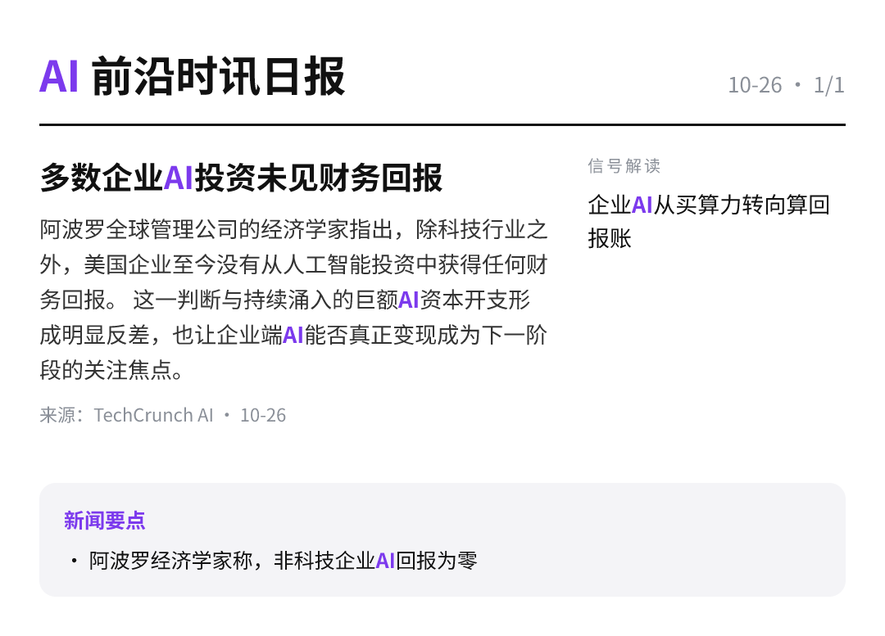

每天高频班次的 AI 领域要闻速览：发生了什么，为什么重要。
日报日期 2026-10-26（Asia/Shanghai）· 共 1 条 · 生成时间 01:00

阿波罗全球管理公司的经济学家指出，除科技行业之外，美国企业至今没有从人工智能投资中获得任何财务回报。 这一判断与持续涌入的巨额AI资本开支形成明显反差，也让企业端AI能否真正变现成为下一阶段的关注焦点。
TechCrunch AI00:57原文链接 ↗